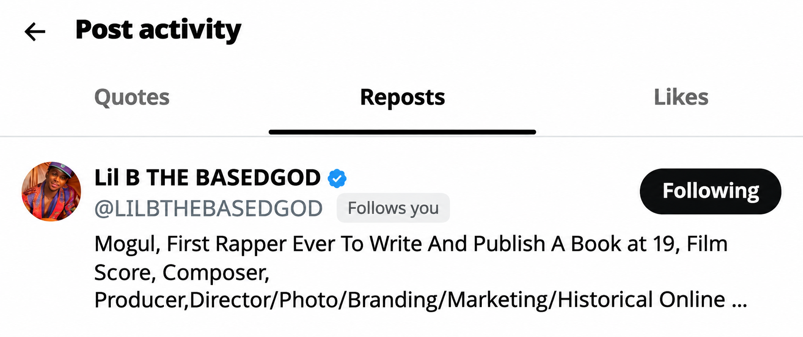
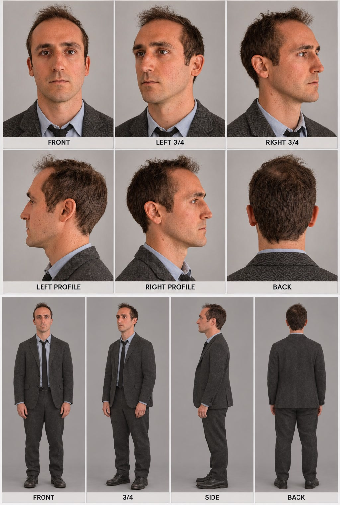

Selected works
John Rosati
I make films in Connecticut. I studied film at Emerson College and spend much of my working life in a metal fabrication shop. In a shop drawing, two views can describe the same object and look almost nothing alike. I like what happens when two images do that.
Once by Lil B

Return to selected works →